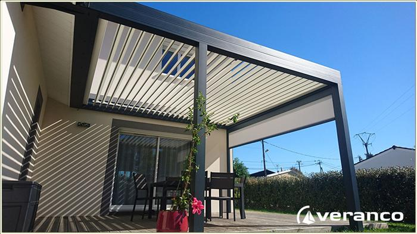

Exemple de nos produits.

Contactez-nous
Veuillez écrire votre demande
Depuis 1983, VERANCO vous propose des vérandas et pergolas en aluminium de haute qualité à prix compétitifs. Grâce à nos entreprises partenaires indépendantes, nous avons su nous positionner comme le premier réseau vérandaliste européen. Avec Veranco constucteur de véranda depuis plus de 35ans, vous vous assurez du savoir-faire d'un grand fabricant.
JOUR DE SCOP est une société coopérative créée en 2015 par plusieurs salariés avec pour but commun qui est de vous satisfaire. Aujourd'hui c'est votre référant en France, Suisse, Belgique. Toutes nos fabrications sont prémontées une première fois en usine afin de vous garantir une pose dans les règles de l'art. Veranco utilise des matériaux de haute qualité.
Ainsi, particuliers, professionnels et collectivités trouveront chez ces professionnels de Magnanville mais aussi dans le monde entier les produits les plus adaptés pour chacunes de vos demandes. Tous les produits sont fabriquées aux normes en vigueur, posées dans les règles de l'art par des professionnels qualifiés et sont certifiées par des marques et labels.